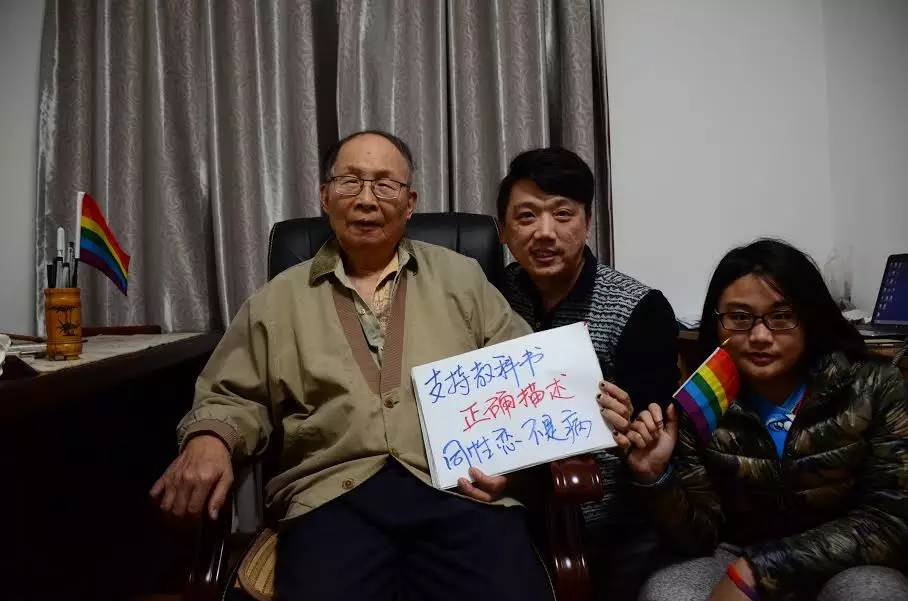

首个将同性恋纳入教材的张伯源教授，80大寿前夕公开撑同志啦！
本文转载自公众号：GLCAC
贺卡原文如下：
张伯源老师：您好。
感谢您，
因您的仁义和关爱，30年前我们避免了入罪。
30年后的今日，我们早已不再被视为病。
感谢你今天站出来为支持正确非歧视的教材发声，祝您八十大寿快乐！
希望在您有生之年，可以看到中国的教材中不再污名同性恋。
也愿更多与您有着仁爱与道义的人，一起做出正义的改变。
爱你。
秋白.2015年12月14日于广州。

昨日，因教科书污名同性恋而起诉教育部而走红的中大学子“秋白”给一位即将在本月20日迎来80大寿的一位张姓老人寄去了生日祝福。
为什么说“...30年前我们避免了入罪”呢？
此处注定了有八卦。
缘起：张老，何许人也？
张伯源1960-1987任教于北京大学心理系，从助教直至教授。还曾出任过中国健康教育研究所研究室主任，及北京各大学心理学院院长等职位。头衔包括中国心理卫生协会心理咨询与心理治疗委员会副主任，深圳市公安局心理辅导中心顾问.....（省略2万字）总之，就是早期中国心理学领域的“大咖”！腻害吧。
他和同性恋什么关联？
此前，在中国同性恋是有可能因被认定为罪的。
直到1997年“鸡奸罪”的废除，现实中了中国同性恋的非刑罪化。听说，在更早的80年代就时常有警察带着抓到的同性恋去询问张老：“这是不是病？是病你留下治，不是我带走。”那时，张老基于人道主义的考量，首次将同性恋列入心理与精神疾病的范畴并编入了教材。据当时知情人说“他宁愿同性恋被当作病看，也不愿他们成为阶下囚”---他并不认为这是病或是罪。
所以，就是他，就是他，就是他！！！
目前可八卦到的第一个将同性恋写入中国教科书中的人，他当时的道义和关爱，令到很多“同志”免受牢狱之灾。
30年之后，80大寿之际：张老“挺身”撑同志！
在得知张老即将在80大寿之后，秋白的朋友们上周与张老约定了登门拜访。得知来意后，张老很开心地狱这些同志小伙伴们聊了2个多小时。
他关切地说“社会压力越大，就越会让同志躲躲藏藏，生活质量不好，感情不稳定，应该消除歧视，让他们不承受那么多压力。”当聊到现在普遍存在的通过电击“治疗”同性恋的不法机构和教科书污名时，老爷子和他的秘书长都很吃惊。因此，他拍下了一段视频送给大家，希望大家，尤其是同志父母要树立正确的观念：同性恋不是病，不需要被矫正和治疗。
（张老说：支持教科书正确描述，同性恋不是病~！）
重要的事情说三遍，
2001年，中国国家科学标准已与国际接轨而不再将同性恋视为病啦~！
2001年，中国国家科学标准已与国际接轨而不再将同性恋视为病啦~！
2001年，中国国家科学标准已与国际接轨而不再将同性恋视为病啦~！
遗憾的是，据调查（点击“原文阅读”了解）仍有40%的教材认定同性恋是变态，超过50%的教材介绍同性恋扭转治疗有关的方法。而2005年，张老再编新版《变态心理学》时已不再谈同性恋为病了，而是更多地介绍这个群体和历史文化。如今张老近80岁了，时代也发生了很大的变化。感谢他这样的学者为同性恋群体所做出的努力。
看见没，令人激动~！
中国第一个将同性恋写入教科书的心理学“大咖”说同性恋不是病。那些从来没见过“活的”同性恋，也没做过这些研究的编者们，还不快现出原形来~！
快来看看，张老还对“同志们”说了什么吧。
（建议爱爱Wifi下点击，除非你是土豪哦~~）
好人平安：给张老寄上一张生日祝福吧~！
正如秋白所说“因您的仁义和关爱，30年前我们避免了入罪。”
真心感激这样的担当的学者今天再次站出来为支持正确非歧视的教材发声~~
我们也想借此机会向张老表示感谢和生日祝福。在征得张老本人同意之后，我们发起以下倡议：不管你是直人，还是同志，快给这位可爱可敬的老人寄出一份祝福吧。尽量在12月20日之前寄出都可~！
如何参与（步骤）：
1、购买一张漂亮的明信片或贺卡，写下对张老的祝福与感恩。
当然，如果你愿意也可以画点什么、录个歌曲刻盘或加上个小礼物一起寄过去。
邮寄地址：
北京市海淀区颐和园路5号北京大学心理学系，转张伯源收，邮编100871
2、寄出前，给你寄出贺卡或明信片拍个留念照吧。拍卡片，或你与卡片的合照~~
写上你想说的话发好友圈或微博请加标签 #支持教科书正确描述同性恋#或给我们公众号留言发照片，期待照片集中有你的身影~~
一起用行动 #支持教科书正确描述同性恋# 转发此信息到你的朋友圈和微博，让更多人看到张老的力量，也看到我们的声音和需要。